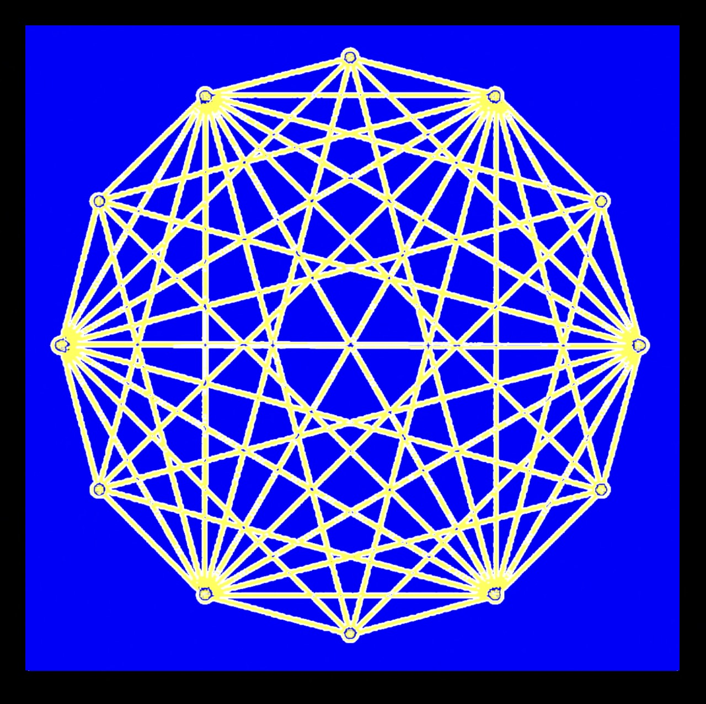

<!doctype html>
<html lang="en">
<head>
    <title>THE 12 COUNCILS</title>
    <!-- Required meta tags -->
    <meta charset="utf-8" />
    <meta name="viewport" content="width=device-width, initial-scale=1, shrink-to-fit=no" />

    <!-- Bootstrap CSS v5.2.1 -->
    <link href="https://cdn.jsdelivr.net/npm/bootstrap@5.3.2/dist/css/bootstrap.min.css" rel="stylesheet" integrity="sha384-T3c6CoIi6uLrA9TneNEoa7RxnatzjcDSCmG1MXxSR1GAsXEV/Dwwykc2MPK8M2HN" crossorigin="anonymous" />

    <style>
        body {
            background-color: #F8F8F8;
            font-family: "Regular", Arial, sans-serif;
            margin: 0;
            padding: 0;
            display: flex;
            align-items: center;
            justify-content: center;
            min-height: 100vh;
        }
        .content-container {
            background-color: white;
            width: 800px;
            padding: 40px 100px;
            min-height: 100vh;
            border: 1px solid rgb(215, 213, 213);
            padding-top: 60px;
          
        }
        @media only screen and (min-width:300px) and (max-width:800px){
            .content-container {
            background-color: white;
            width: 100% !important;
            padding: 40px 20px !important;
            min-height: 100vh !important;
            border: 1px solid rgb(215, 213, 213);
            padding-top: 30px !important;
          
        } 
        h2{
            font-size: 16px !important;
        }
        p{
            font-size: 13px !important;
        }
        }
        @media only screen and (min-width:1400px){
            .content-container {
            background-color: white;
            width: 1000px !important;
            padding: 40px 160px !important;
            min-height: 100vh !important;
            border: 1px solid rgb(215, 213, 213);
            padding-top: 100px !important;
          
        }
        }
        h1 {
            text-align: center;
            font-size: 20px;
            margin-top:0px;
            font-family: "Regular";
            width: fit-content;
            color: #fff;
            background-color: #DAD1CA;
            padding-top: 8px;
            padding-bottom: 3px;
            text-decoration: underline;
        }
        h2 {
            text-align: center;
            font-size: 13px;
            font-family: "Bold";
            width: fit-content;
            text-decoration: underline;
            color: #DAD1CA;
            margin-top: 8px;
            margin-bottom: 0px;
        }
        p {
            font-family: "Regular";
            
            font-size: 12px;
            margin-bottom: 0px;
            line-height: 1.6;
        }
        a {
            color: inherit;
            /* font-size: 14px; */
            
        }
        span {
            font-family: "Bold";
        }
        .underline {
            text-decoration: underline;
        }
        strong {
            font-family: "Bold";
        }
        .image-container {
            display: flex;
            justify-content: center;
            align-items: center;
            margin-bottom: 10px;
        }
        .image-container img {
            height: 170px;
            width: 170px;
        }
        .contact{
            text-decoration: underline;
            color: rgb(4, 51, 255);
            text-align: center;
            display: block;
            font-size: 13px;
        }
        @font-face {
                font-family: "Regular";
                src: url(AvenirNextLTPro-Regular.otf);
            }
            @font-face {
                font-family: "Bold";
                src: url(AvenirNextLTPro-Bold.otf);
            }@font-face {
                font-family: "Medium";
                src: url(AvenirNextLTPro-MediumCn.otf);
            }
            @font-face {
                font-family: "Regular2";
                src: url(AvenirNextLTPro-Demi.otf);
            }
    </style>
</head>

<body>
    <div class="content-container">
        <div class="image-container">
            
        </div>
        <div class="w-100 d-flex justify-content-center align-items-center" style="margin-bottom: 30px;">
            <h1>THE 12 COUNCILS</h1>
        </div>
        <section>
            <h2>THE ARRIVAL:</h2>
            <p>NASA's Webb, CYGNSS, COSMIC-2, SUIOMI NPP and TERRA (EOS/AM-1) are just a few
                satellites reported that Earth is not the only planet heating up. But all of the planets in the
                solar system has been rapidly rising in temperature. Our planetary neighbours also burning
                fossil fuel? Or is it common sense that our new season of the Sun has been heating up since
                2012? The logic - trapped heat from exterior defaulting interior to generate pressure. We
                are talking about Earth. New and aggressive trapped heat on Earth surface stimulates the
                changes within the planet. Hence the growing rise in magma activities irritating atmospheric
                global warmings.</p>
        </section>
        <section class="mt-4">
            <h2>GLOBAL CULLING REVISITED:</h2>
            <p>Above all current natural disasters. A rare one arises. These solar-storms epoch has arrived
                for a stretch of next 20-50 years. Reaching its peak within a decade. Countries never seen
                ‘aurora borealis’ are witnessing this phenomena. This is NOT a good sign. Hence the
                horrendously frequent earth quakes and volcanic eruptions from beneath our feet, irritates
                the surface raising sea levels, melting icecaps slippages to freak weather storms due to the
                Earth acting as a <a href="#">‘pressure cooker’</a> baking this planet by the new season of the Sun. The
                difference between solar-storms verses <a href="#">‘all currently known calamities’</a> is that modern
                humanity can recover from them all. But not from a solar-storm frying all electrical circuits.
                Humanity revolves around electricity dependent technologies. We cannot live without
                motorised machines interwoven 95% into our living spaces. These super heated solar
                storms causing (Global Power-Cuts) relay mass floods occurring very frequently throughout
                our history as carbon dated by geologists stated at <a href="#">“(repeated pattern)”</a> around
                <a href="#">“(3500-4000)”</a> years.</p>
            <p class="underline"><span>></span>The Great Ice Age Flood <strong>18,000</strong> years ago</p>
            <p class="underline"><span>></span>Younger Dryas Flood <strong>14,800</strong> years ago</p>
            <p class="underline"><span>></span>Persian Gulf Flood <strong>10,900</strong> years ago</p>
            <p class="underline"><span>></span>Black Sea Deluge <strong>7,600</strong> years ago</p>
            <p class="underline"><span>></span>Noahs Flood <strong>4,376</strong> years ago</p>
            <p class="underline"><span>></span>Modern Day Global Flood is now overdue at 2024.</p>
            <p>Above patterns of the common repeated Global Mass Death.</p>
        </section>
        <section class="mt-4">
            
            <h2>FREAK SOLAR ABSCOND:</h2>
            <p>The last <a href="#">publicly recorded</a> freak solar storm incident was September 1st 1859 where 
                humanity was in their infancy with electrical mechanics. Even then, all of their electrical 
                components was not spared. There was zero recovery, but rather a complete restart of the 
                same experimental science lead to today’s pinnacle level at knife-edge. Today our stockmarkets, farming, housings, computers, bankings, hospitals, aeroplanes, militaries to 
                governmental systems encompasses all livelihood are 95% electrical mechanicals just to be 
                impacted by this new Sun to blackout our planet. Thereafter incapable of utilising already 
                downed electrical mechanical components to recover humanity back to its current state. 
                This will be an apocalyptic event. But instead scientists coined it ‘The Carrington Event’ or 
                ‘Corona Mass Ejection’ (CME).’ Should we discard all globally fried electrical and rebuild 
                new electrical components just like 1859? Ignorantly wishing incidents like this will never 
                happen again?</p>
        </section>
        <section class="mt-4">
            <h2>DOUBLE SOLUTIONS:</h2>
           <p>We propose all solutions within two operations.</p>
           <p>(<a href="#">The Internal Faction</a>) and (<a href="#">The External Faction</a>) </p>
        </section>
        <section class="mt-4">
            <p>(01)<br> 
                (<a href="#">The Internal Faction</a>) are solar-storm proof headquarter colony that houses 
                administrations, mastermind, coordinators and operations for KEY candidates that are 
                utmost in recovering a dead society. Key scientists, leaders, architects, military, staffing, 
                irrigation, task-forces to utilise our pending operation recovery programs and tools that are 
                untouchable by solar-storm blackouts.</p>

        </section>
        <section class="mt-4">
            <p>(02) 
                (<a href="#">The External Faction</a>) are mass reproduction of temporary (food-shelter-clothing)-all in 
                one-(PACKAGE) that are (CME) proof. Civilians can consider these PACKAGES as their (back 
                up)-(safe havens) each time solar storms attempt to fry all electrical components, which will 
                frequent from (annual basis towards a monthly basis) as this planet enter towards crescendo 
                peak season of the new Sun for the next 50 years. </p>
        </section>
        <section class="mt-4">
            <h2>“KEEP CALM, CARRY ON”</h2>
            <p>If the above proposal to recover a blackout society seemed distasteful-(<a href="#">The Internal Faction</a>). 
                At least consider the protection of humanity agenda-(<a href="#">The External Faction</a>). Current Global 
                Disastrous Calamities recorded from every single populated regions on this planet at a 
                weekly basis. The number of catastrophic events leaping annually beating the records from 
                previous years. There are only so much any government(s) can suffice during any massive 
                emergency responses and outcries by desperate public. The civilised are (3-9) meals away 
                from anarchy. To avoid riots and civil war throwing regional burnings. There will be strong 
                revolt by aftermath survivors towards any leaders and decision makers whilst they return to 
                Earth surface after their safe haven isolations. We proposed above two simple projects to 
                ease the pending inevitable calamities and avoid any coup towards toppling governments. </p>
        </section>
        <section class="mt-4">
            <h2>12 TASK FORCES:</h2>
            <p>‘Initial Proposal’-Our planned HQ giant 3D printing factories for sudden distributions, 
                exercises 12 equally positioned locations around the equator measured for emergency 
                distributions from ETA-(zero to two hours) in response time as well as housing selected KEY 
                individuals until every massive solar storm subsides. We have targeted twelve regions 
                around the equator to build our response team HQ development and operational bases. 
                This proposal targets your closest <a href="#">local equator line</a> to develop this (01/12)-(one of twelve) 
                task force base(s).</p>
        </section>
        <section class="mt-4">
            <h2>PSEUDO SCIENCES:</h2>
            <p>(a)-Alternatively, There are extreme methods to deflect solar storms, which magnetic 
                radiations can be absorbed by water. But is moving 8 billion population under the sea 
                agreeable or darkening entire Earth with manmade rain clouds for next 50 years of strong 
                solar activities? </p>
                <p class="mt-4">
                    (b)-Other alternative to protect entire planet from solar storms, but that is conceptual only 
and a technology that is incapable of establishment until we have world peace without 
infringing every nation’s sensitive airspaces before introducing - <a href="#">Project Escutcheon Screen</a>.
                </p>
        </section>
        <section class="mt-4">
            <h2>A FINAL CALL:</h2>
            <p>We hope this proposal can persuade your sector to collaboratively in-part finance this global 
                project. When planetary destructive path torn through our invisible borders. We only have 
                each other. We are 120 strong-response team whom will develop this proposal alongside 
                provide (free high tech protective <a href="#">clothings-shelter-rations</a>) for every needed individuals 
                within affected areas until functional governments resumes recovery and rebuilding. With 
                our parallel engineering developments to suffice KEY individuals into HQ-Giant Scientific 
                Luxury Bunker Society for conducting Future Humanity Recovery and Controlled Societal 
                Restart. </p>
        </section>
        <section class="mt-4">
            <h2>MANUFACTURING CONSTRUCTIONS:</h2>
            <p><a href="#">(Estimated 891 million dollars)</a></p>
            <p><a href="#"><span>></span>Delivery Cargo Shuttle Manufacture </a></p>
            <p><a href="#"><span>></span>Giant 3D Printer Building Materials </a></p>
            <p><a href="#"><span>></span>Development Key Head Quarter </a></p>
            <p><a href="#"><span>></span>Emergency Distribution Service  </a></p>
            <p><a href="#"><span>></span>Delivery Cargo Shuttle Factory </a></p>
            <p><a href="#"><span>></span>Building Plantation Locations </a></p>
            <p><a href="#"><span>></span>Mobility Suit New Materials  </a></p>
            <p><a href="#"><span>></span>Construction Companies </a></p>
            <p><a href="#"><span>></span>Food Rations 3D printers </a></p>
            <p><a href="#"><span>></span>Product Testing Systems </a></p>
            <p><a href="#"><span>></span>Mobility Apparel Printer </a></p>
            <p><a href="#"><span>></span>Food Ration Resources  </a></p>
            <p><a href="#"><span>></span>Desalination Machines  </a></p>
            <p><a href="#"><span>></span>Product Testing Lands </a></p>
            <p><a href="#"><span>></span>Apparel Technologies </a></p>
            <p><a href="#"><span>></span>Clean Water Vessels  </a></p>
            <p><a href="#"><span>></span>Apparel 3D Printers </a></p>
            <p><a href="#"><span>></span>Full Running Costs  </a></p>
            <p><a href="#"><span>></span>Apparel Materials  </a></p>
            <p><a href="#"><span>></span>Security Systems  </a></p>
            <p><a href="#"><span>></span>24/7 staffing  </a></p>


        </section>
        <section class="mt-4">
            <h2>DEVELOPMENT SCHEDULES: </h2>
            <p>Our conglomeration of NDA private sectors willingly stepping out to establish a public 
                entity/company for this project, which will take one year to build-then one year that follows 
                to produce enough to suffice one million individuals. Additional one million more per year, 
                covering the years to follow. These twelve emergency response HQ operational nests does 
                not require our ownership. We only develop, manage and labour its benevolent intensions. 
                Once built and demonstrated. These projects can be handed back to their funding bodies 
                wholly and out-right for future emergency activations. It is better to be prepared than hope 
                for a saviour in the midst of suffering. </p>
        </section>
        <section class="mt-5">
            <a class="contact" href="mailto:contact@the12councils.com">contact@the12councils.com</a>
        </section>
    </div>

    <!-- Bootstrap JavaScript Libraries -->
    <script src="https://cdn.jsdelivr.net/npm/@popperjs/core@2.11.8/dist/umd/popper.min.js" integrity="sha384-I7E8VVD/ismYTF4hNIPjVp/Zjvgyol6VFvRkX/vR+Vc4jQkC+hVqc2pM8ODewa9r" crossorigin="anonymous"></script>
    <script src="https://cdn.jsdelivr.net/npm/bootstrap@5.3.2/dist/js/bootstrap.min.js" integrity="sha384-BBtl+eGJRgqQAUMxJ7pMwbEyER4l1g+O15P+16Ep7Q9Q+zqX6gSbd85u4mG4QzX+" crossorigin="anonymous"></script>
</body>
</html>
